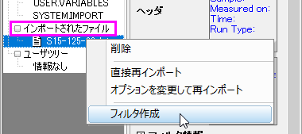

FAQ-919 Origin 2018にアップグレードした後シートに保存したASCII インポートフィルタまたはインポートオプションが利用できません
import-settings-filter-broken-after-upgrade
最終更新日:2018/1/23
OriginのASCIIインポートコードはOrigin 2018 SR0 (b9.5.0.193)で修正されました。前のバージョンでインポートフィルタファイル(*.OIF)およびワークブックファイル(*.OGW)を使用してデータインポートのカスタマイズしていた場合でも問題なく使用を継続できるはずです。
万が一、インポート設定を保存したインポートフィルタやワークブックファイルを使用したデータインポートで問題が出た場合、Origin 2018で使用できるようにファイルを変換する必要があります。
Origin 2017以前の.OGWファイルをOrigin 2018 SR0以降に変換
- Origin 2017(あるいはそれ以前)の.OGWファイルををOrigin 2018で開きます。
- スクリプトウィンドウ(ウィンドウ：スクリプトウィンドウ)を開き、次のように入力します。
@IA = <Enter>
... 値2 を返します。
- ASCIIファイルを再インポートします。
- ファイルの種類を.OGWとしてワークブックを再保存します（ファイル: ウィンドウの新規保存）。
Origin 2017以前の.OIFファイルをOrigin 2018 SR0以降に変換
- スクリプトウィンドウ(ウィンドウ：スクリプトウィンドウ)を開き、次のように入力します。
@IA = <Enter>
... 値2 を返します。
- 古い.OIFで使用していたASCIIファイルをドラッグアンドドロップします。
- ワークブックウィンドウのタイトルバーを右クリックして、オーガナイザを表示を選びます。
-
- 
- インポートファイルの項目を開き、インポートされたファイル上で右クリックしてフィルタを作成を選択します。
- Origin 2018以降でフィルタを保存します。
キーワード:再インポート, ファイルヘッダ, サブヘッダ, ダイアログテーマ